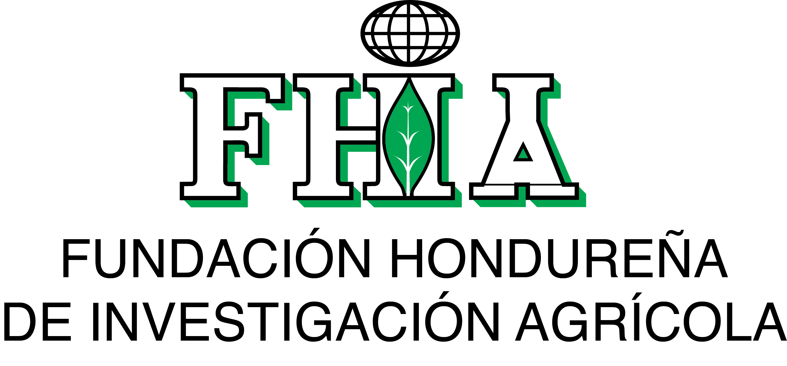
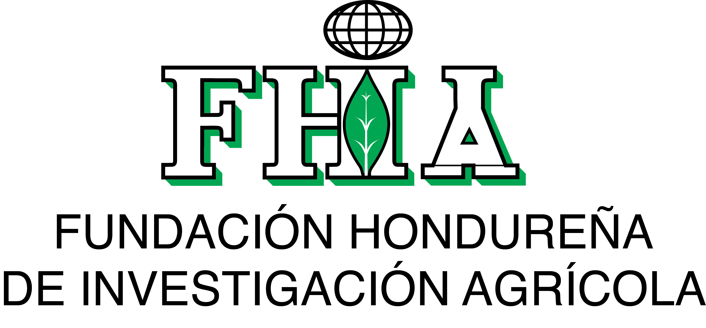

Indicación Geográfica Cacao de Costa Rica
Portal del proyecto para difundir programas de actividades, materiales de talleres, mapas y avances técnicos.
Presentación del proyecto
El cacao es un cultivo emblemático en la historia, la cultura y la economía de Mesoamérica. La región ha sido centro de domesticación y diversificación del Theobroma cacao, dando origen a variedades finas y de aroma reconocidas internacionalmente. Sin embargo, a pesar de esta riqueza biocultural y genética, la participación mesoamericana en el mercado global sigue siendo mínima.
Las Indicaciones Geográficas (IG) se presentan como una herramienta estratégica para valorizar los cacaos diferenciados, proteger el patrimonio biocultural, impulsar el desarrollo socioeconómico y abrir oportunidades comerciales vinculadas a la calidad, el origen y el turismo.
Este proyecto —coordinado por la UNA, en alianza con FHIA y la Fundación Juana de Vega, y con apoyo de FONTAGRO— promueve una hoja de ruta para diseñar y poner en marcha IGs de cacao en Costa Rica, articulando actores públicos, academia, productores, industria y comunidades.
Talleres
Encuentro Nacional del Sector Cacaotero
Fecha: 29 de setiembre de 2025
Lugar: El Cacaotal, Belén, Costa Rica
Participantes
Los participantes de este taller sobre Indicaciones Geográficas para el cacao en Costa Rica incluyen representantes de instituciones públicas clave como el Ministerio de Agricultura y Ganadería (MAG), el Instituto Nacional de Innovación y Transferencia en Tecnología Agropecuaria (INTA), el Instituto Nacional de Aprendizaje (INA), así como de universidades nacionales (UNA, UCR y TEC), cuyas capacidades técnicas y académicas resultan fundamentales para el fortalecimiento del sector cacaotero.
Asimismo, se contará con la participación de cooperativas y asociaciones de productores de cacao, agricultores individuales, representantes de comunidades indígenas vinculadas al cultivo tradicional, y representantes de empresas exportadoras y chocolateros, actores estratégicos en la cadena de valor del cacao.
El taller también contará con la valiosa contribución de expertos de la Fundación Juana de Vega (España), quienes aportarán su experiencia en la gestión y valorización de productos agroalimentarios diferenciados a través de las Indicaciones Geográficas.
Programa
Participación virtual
Para unirse al taller en modalidad virtual, use el siguiente enlace (se activará próximamente):
Ponencias
- Marco teórico y legislativo para IG de cacao — Granados & Villalobos — Ver presentación
- Avances del proyecto — Hernández, Granados, Picado — Ver presentación
- Experiencia de Galicia — Ribas & Andrade — Ver presentación
Mapas
Zonas cacaoteras de Costa Rica (versión 2025).

Estudios técnicos
- Genómica: diversidad y linajes de Theobroma cacao; marcadores para trazabilidad y relación con atributos de calidad.
- Historia y cultura: reconstrucción de trayectorias históricas, prácticas tradicionales y patrimonio biocultural.
- Microbiología: comunidades microbianas en fermentación y secado; vínculos con compuestos precursores de aroma/sabor.
- Sensorial: panel entrenado y consumidores; integración con datos fisicoquímicos.
- Cartografía & SIG: delimitación preliminar (p. ej., <700 m s. n. m.) y validación participativa.
Próximamente: fichas técnicas por territorio, protocolos y resultados.
Organizaciones responsables

 
